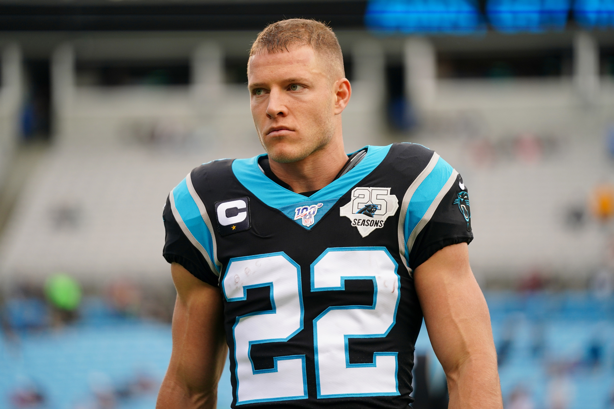
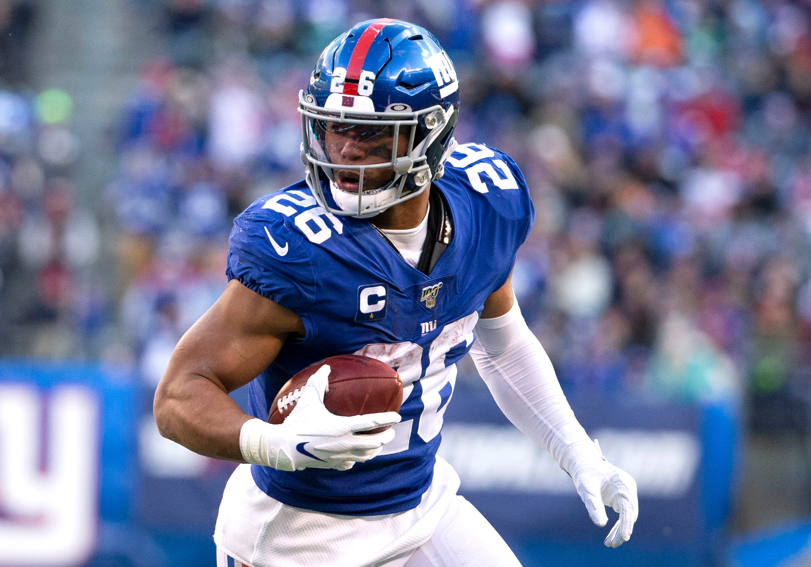
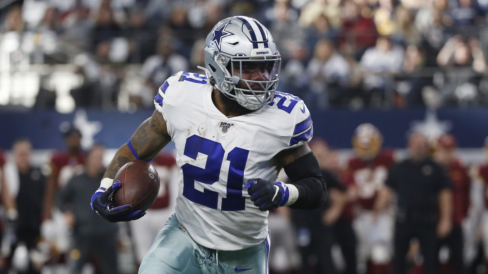

Top Picks of Fantasy
*based on PPR (Points Per Reception) format, summaries provided by "FantasyPros"

Christian McCaffery
Starting running back for the Carolina Panthers. Average draft position (ADP): #1. Fantasy points scored last year: 471.2 points.
Fantasy Pros says, "You can try to make the argument that McCaffrey shouldn't go No. 1 overall this year, but you'd lose the argument. Outside of saying, "running backs don't repeat as the top option," there's nothing that should suggest McCaffrey won't. He's not just a running back. He's a wide receiver. He scored 182.5 half-PPR points through the air alone, which would've been the No. 20 wide receiver in fantasy last year, ahead of Stefon Diggs. Even if McCaffrey simply stopped playing football in Week 12, he would've finished as the No. 1 running back by a massive 22.1 PPR points. The new offense and improved quarterback play shouldn't hurt at all."
Saquon Barkley
Starting running back for the New York Giants. Average draft position (ADP): #2. Fantasy points scored last year: 244.1 points (injured).
Fantasy Pros says, "After an extremely impressive rookie season, Barkley came back down to earth a bit in 2019, though 4.6 yards per carry behind that Giants offensive line is nothing to scoff at. Playing through injury was a clear net-negative to his overall numbers, and something he hopefully learned from. The biggest difference was breakaway runs of 15-plus yards, as Barkley rattled off 20 of them in his rookie season, but just nine of them in his sophomore season. With all the weapons in this offense, you have to wonder just how many targets Barkley will get, but trust me, the Giants are building their offense around him and not anyone else. If Daniel Jones can take a step forward in year two, it'll help open lanes for Barkley. It also doesn't hurt that they dramatically improved the offensive line this offseason"
Ezekiel Elliot
Starting running back for the Dallas Cowboys. Average draft position (ADP): #3. Fantasy point scored last year: 311.7 points.
Fantasy Pros says, "There's only one running back over the last five years who's finished top-six three times, and that's Elliott. Oddly enough, he's never finished as No. 1 though. The Cowboys passing offense just got better with the addition of CeeDee Lamb, and while that may put a cap on Elliott's targets in the passing game, he should be free to rock against seven-man fronts. He saw eight-plus defenders in the box 19.3 percent of the time last year, a number that may dip down into the single digits, provided the Cowboys go three-wide more often than not. Stop trying to find "the next big thing," because Elliott has proven time and time again that he's among the safest picks at the top of the draft. He's posted RB2 or better numbers in 92.9 percent of his career games, which is better than any running back I've ever charted. In fact, the closest is Le'Veon Bell, who's hit that mark 87.0 percent of the time."

Dalvin Cook
Starting running back for the Minnesota Vikings. Average draft position (ADP): #4. Fantasy points scored last year: 292.4 points (missed 2 games)
Fantasy Pros says, "It turns out Gary Kubiak is very good for a run-game. Cook took his game to another level in 2019, finishing as the No. 5 running back despite missing two games. Not only did he total 18-plus carries in eight games, but he also ranked third in yards per route run among running backs. With Stefon Diggs gone, we could see him highlighted even more in the passing game, though Justin Jefferson will eat some of them. Cook also led the league with 21 carries inside the five-yard-line. Health has always been a question mark with Cook, but when healthy, he's easily a top-10 back."